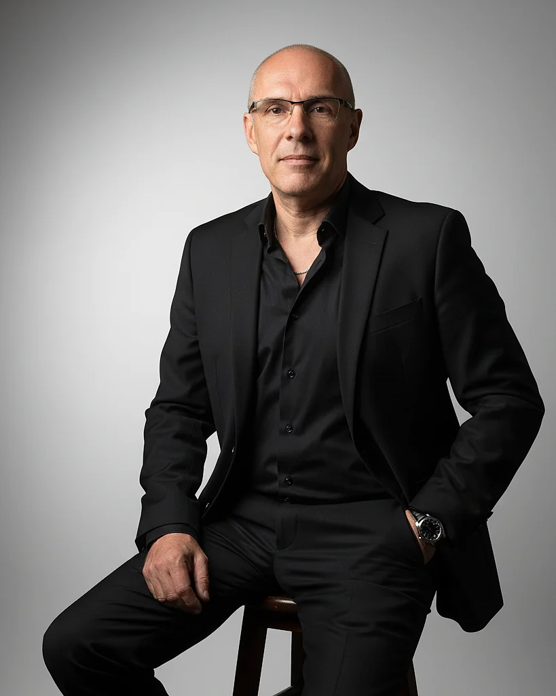
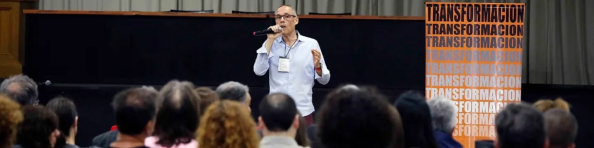

Desde la urgencia
Reaccionás, apagás incendios y decidís sobre la marcha. Lo importante espera.
Coaching y mentoría para decidir con claridad cuando todo apura.
Coach Ontológico ICF · Master en PNL · Especialista en Neuropsicoeducación · Más de 20 años liderando equipos en multinacionales
Los planes están y las herramientas también. Lo que suele trabarse son las conversaciones que no se tienen, las decisiones que se postergan y los equipos que dan vueltas sobre lo mismo.
Reaccionás, apagás incendios y decidís sobre la marcha. Lo importante espera.
Elegís con criterio, priorizás lo que importa y sostenés el rumbo.
¿Cuándo fue la última vez que tomaste una decisión desde la claridad y no desde la urgencia?
Elegí el formato que mejor se ajuste a lo que necesitás hoy. Todo empieza con una conversación.
Un espacio uno a uno, con foco en vos.
Líderes y profesionales frente a una decisión, una transición o un bloqueo.
Un espacio confidencial para ordenar lo que importa, ver con claridad y pasar a la acción.
Quienes quieren aprender de alguien que ya recorrió el camino de liderar equipos.
Orientación práctica, basada en más de 20 años de experiencia, para ganar criterio propio.
Trabajo con quienes lideran y con quienes lideran juntos.
Equipos que trabajan mucho pero tropiezan con la comunicación, la confianza o la coordinación.
Un espacio para aclarar roles, construir acuerdos y alinear el rumbo compartido.
Grupos de líderes o profesionales que quieren aprender unos de otros, con guía experta.
Perspectivas compartidas, práctica entre pares y herramientas para llevar a la acción.
Experiencias para compartir ideas y herramientas con muchas personas.
Organizaciones y equipos que necesitan una experiencia práctica sobre un tema humano concreto.
Herramientas y ejercicios para aplicar en el trabajo diario.
Eventos, comunidades y organizaciones que quieren abrir una conversación sobre liderazgo y cambio.
Nuevas preguntas y una mirada distinta sobre cómo decidimos y nos relacionamos.
Un proceso claro, de la primera conversación a los resultados.
Una llamada gratuita de 30 minutos para conocernos, escuchar lo que te pasa y ver si hay un buen encaje.
Definimos juntos qué querés lograr y cómo vamos a saber que estás avanzando.
Encuentros con preguntas, herramientas y práctica para pasar de la idea a la acción.
Revisamos lo aprendido, contrastamos los avances con los objetivos y decidimos cómo seguir.

Soy César Smeriglio: Coach Ontológico ICF, Master en PNL y Especialista en Neuropsicoeducación. Durante más de 20 años lideré equipos en multinacionales, y ahí aprendí algo que hoy guía mi trabajo: lo que más nos frena casi nunca es técnico, es humano.
Acompaño a líderes, equipos y personas a mirar sus decisiones desde otro lugar, para transformarse con propósito, claridad y acción.
Un Coach Ontológico no te dice qué hacer. Te invita a mirar distinto. A cuestionar lo que creías obvio.
Más de 20 años liderando equipos y proyectos de alta complejidad en entornos multinacionales.
Lideró equipos globales y distribuidos de hasta 15 personas, en proyectos de alta complejidad y con decisiones bajo presión.
Coordinó la integración funcional entre tecnología y negocio en un banco de Argentina, trabajando la comunicación, la confianza y la cultura entre áreas.
Lideró implementaciones en varios países de Latinoamérica para un grupo agroindustrial, con foco en gestión del cambio y capacitación.
Trabajó en el hub de tecnología para Argentina, en proyectos de homebanking y sistemas de gestión de pagos.
También trabajó con BHP Billiton, Banco Galicia, Cargill y McDonald's.
Competencias: coaching individual y organizacional, PNL aplicada, gestión del cambio, comunicación efectiva, liderazgo adaptativo, confianza y seguridad psicológica.

Palabras de personas y equipos que trabajaron con César.
[TESTIMONIO REAL: pendiente]
[TESTIMONIO REAL: pendiente]
[TESTIMONIO REAL: pendiente]
Contame qué te está frenando. En 30 minutos, sin costo, vemos si puedo acompañarte y por dónde conviene empezar.